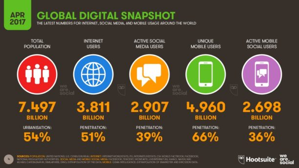

Les réseaux permettent d'optimiser les échanges d'information et les communications, cependant, nos actions sont souvent surveillées sur ces grands réseaux (Facebook, Google, Wifi public...) Ces entreprises profitent de notre trafic sur leurs réseaux pour récolter des informations précieuses sur notre vie privée pour les revendre à des entreprises tierses, par exemple, pour mieux cibler les clients et leur proposer des pubs qui les intéresseront davantage. Ou alors, certains réseaux sont indisponibles en fonction de votre localisation géographique.
Malgré l'innombrable nombre de réseaux, il n'existe pas de "réseau parfait", chacun a ses avantages, et ses inconvénients, certains sont meilleurs que d'autres, mais aucun n'est réellement parfait à ce jour.
Le réseau Internet a beaucoup d'intérêt : Il permet par exemple de communiquer dans le monde entier, en quelques secondes.
C'est un grand outil de liberté
(ceci n'est pas vrai dans certains pays, mais dans la plupart), grâce à Internet, on peut exposer ses idées au monde entier, sans censure la plupart du temps.
On peut aussi avoir accès à un nombre incalculable d'informations en direct (par exemple les informations, des livres etc ...).
Internet permet aussi un meilleur accès à l'éducation, comme il permet un meilleur accès à l'information.
Cependant, malgré la vitesse de transfert de données et informations, Internet est composé d'une
infinité de réseaux différents et son organisation peut sembler tentaculaire. En effet, certains réseaux ne sont pas accessibles depuis tous les navigateurs et la recherche d'informations sur Internet peut
s’avérer compliquée.
Par exemple, le réseau TOR permet d'être plus anonyme et d’accéder à des réseaux inaccessibles depuis les navigateurs classiques : C'est ce que l'on appelle le DarkNet.
Internet a aussi un autre désavantage, qui est la lenteur du réseau, car la vitesse dépend de la connexion des utilisateurs, fournies par les FAI, qui sont souvent très capricieuses et dépendent souvent des zones géographiques (meilleure vitesse en ville qu'en campagne).
Pour éviter cette censure et protéger nos données confidentielles, il est possible de masquer sa réelle adresse IP, grâce à un réseau VPN :
Le réseau VPN a plusieurs intérêts : Par exemple il sert à contourner des restrictions géographiques, mise en place par les FAI (Fournisseurs d'accès Internet),
contrôlés dans certains pays par l'État, qui bloquent certains sites.
Pour cela le VPN fait "croire" aux serveurs que l'ordinateur se trouve dans une autre région du monde.
Il sert aussi beaucoup dans les entreprises, mais il a une forme un peu différente.
Par exemple, grâce à un VPN privé (possédé par une entreprise),
on peut se connecter au réseau de l'entreprise depuis l'extérieur et avoir accès aux fichiers et ordinateurs.
Et enfin, les VPN servent aussi à se rendre invisible sur internet et créer par la même occasion une sorte de "protection".
Par ailleurs, ils ont quelques désavantages, par exemple dans une entreprise, il faut quand même une forte expertise pour mettre en place un VPN, les performances des VPN sont souvent aléatoires et dépendent beaucoup des fournisseurs de services, et enfin les technologies VPN dépendent beaucoup des équipements utilisés.